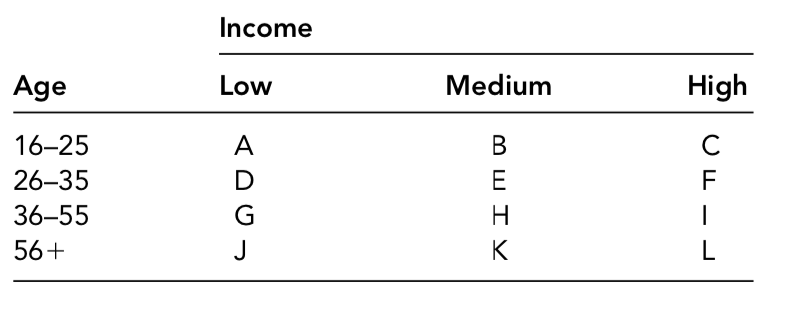
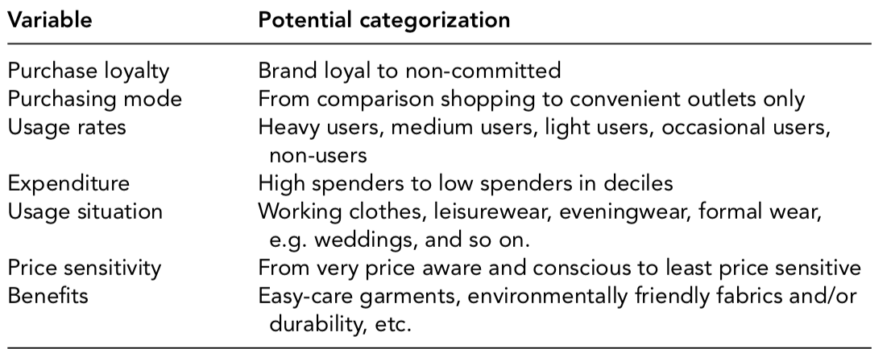

2.2 Segmentation: rationale, bases and strategy :
The advantage of market segmentation:
By segmenting markets, fashion marketers gain several strategic advan- tages. Analysis of markets necessarily means consideration of competi- tors and their relative strengths and weaknesses in relation to customer needs. Such knowledge enables fashion marketers to decide whether to compete directly, if a strategic advantage is evident, or to pos- ition the company to exploit strengths and avoid retaliation from a stronger competitor.
The marketing research necessary to describe and segment a mar- ket usually leads to a deeper understanding of the customer that enables the most effective design of a marketing mix and the ability to respond to changes in the market. Market segmentation enhances marketing planning in that it forces management to consider the relative costs, efficiency and effectiveness of the alternatives that segmentation reveals.
Segmentation bases:
Segments have been described above as groups of customers with similar characteristics. This section deals with ways of describing and analysing those characteristics. A larger market, say the womenswear market, may be divided or segmented into many different ways. There is no standard or preferred way to divide a market; however, it is important that the base(s) selected should relate to customers’ needs. Indeed it is not uncommon to find that fashion marketers use dif- ferent methods for analysing the same market. What follows is an examination of some bases or dimensions that may be used to help categorize customers into meaningful and profitable segments.
Segmentation based on descriptors:
One approach to segmenting markets is to describe the characteris- tics of potential customers. Such descriptions tend to look at demo- graphic, geographical or personality characteristics of the buyer or a combination of the three measures. This approach is termed the descriptor perspective and has the merit that it is easily understand- able and less costly owing to the availability of secondary data. An example would be to classify a market by age and income, thus for menswear we could show the market.
Market segmentation in the menswear market an example based on simple descriptors
Segmentation based on benefits and consumer behaviour:
Market Segmentation: behavioural and benefit variables
Another approach considers the behaviour of, and benefits for, con- sumers of fashion products and services as the main dimensions in segmentation. Here the concern is with monitoring how the consumer behaves and the benefits she or he seeks from the product. Then and only then are descriptors considered. An obvious example may be the categorization of customers into those who are heavy spenders, moderate spenders or low spenders. For the fashion retailer operat- ing a store card system the data should be readily available on a data- base along with other demographic information about customers, i.e. region, income, marital status, age, and so on
An important consideration is the number of variables that may be interlaced to provide a basis for segmentation. It would be unusual to use only one variable to divide a market, but it is wrong to assume that using more variables (multivariable segmentation) is without dif- ficulties. The use of more variables provides greater precision for the analyst. The cost of more variables, however, is the danger of greater market fragmentation as described above. Benefit and behavioural bases for segmentation are rarely sufficient on their own and so they are usually combined with demographic data to display a fuller profile of the segments. Knowing that some customers want easy-care gar- ments is one thing, knowing how many customers and how to reach them via distribution outlets and promotional efforts is another matter.